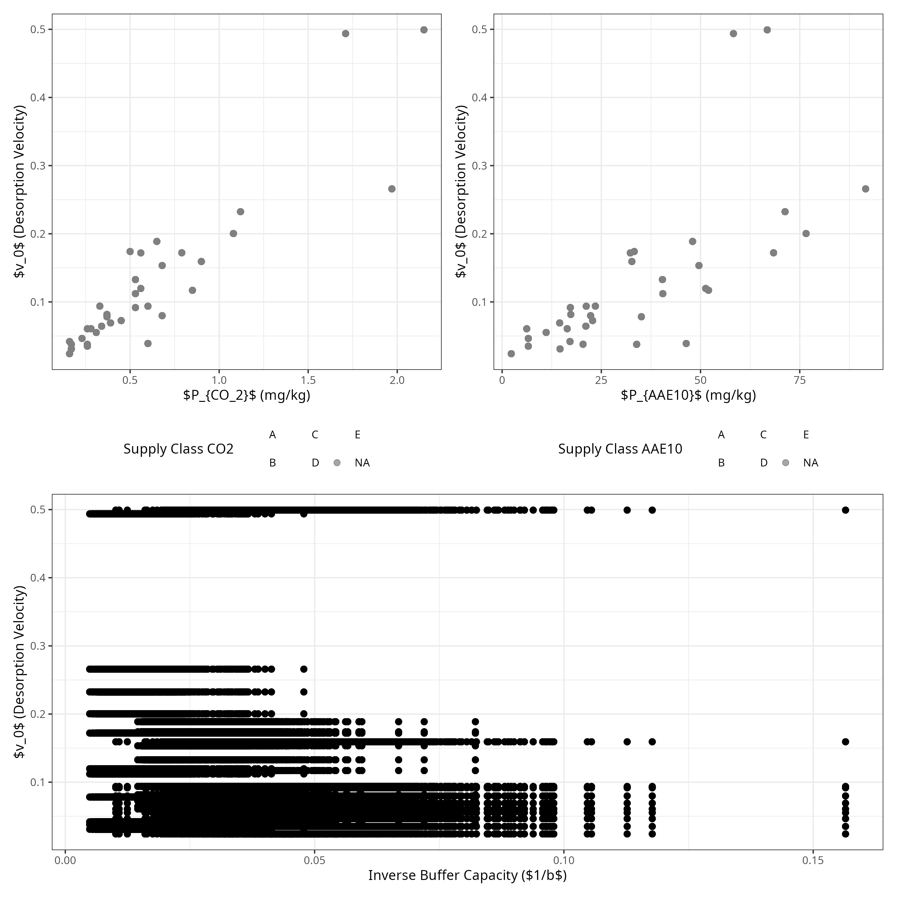

P-release kinetics as a predictor for P-availability in Swiss cropping systems
Abstract
Traditional static soil tests (STPs) for phosphorus (P) often fail to predict agronomic outcomes because they do not account for the kinetic nature of P supply to plant roots. This study investigated whether P desorption kinetic parameters could serve as more effective predictors. Using soils from the long-term Swiss agricultural experiment (STYCS), a sequential extraction method was refined and modeled with a non-linear approach to derive the maximum equilibrium P intensity (\(P_{desorb}\)) and a rate constant (\(k\)). The predictive power of these kinetic parameters was compared against standard Swiss STPs (\(P_{CO_2}\) and \(P_{AAE10}\)) using linear mixed-effects models. For predicting site-normalized yield, STPs were superior, while for national-normalized yield and P-uptake, both methods performed poorly due to dominant pedoclimatic factors. However, the kinetic model demonstrated higher accuracy in predicting the long-term P-Balance, with \(P_{desorb}\) alone explaining 57% of the variance, whereas STP models showed no predictive power. We conclude that while traditional STPs remain adequate for short-term within-field fertility, kinetic parameters serve as a more robust functional proxy for assessing the long-term P status and sustainability of agricultural soils.
1 Introduction
1.1 The Agronomic Dilemma of Phosphorus
Phosphorus (P) is an essential macronutrient for all life, yet its management in agricultural systems presents a significant challenge. In the soil solution, P exists predominantly as highly reactive orthophosphate anions (\(HPO_4^{2-}\) or \(H_2PO_4^{-}\)). These dissolved species are rapidly immobilized—either adsorbed onto the surfaces of clays and metal oxides or precipitated with cations like calcium, iron, and aluminum to form minerals of low solubility (Brady & Weil, 2016; Sposito, 2008). Consequently, the total soil P stock is vast, but the minute fraction dissolved in the soil solution—the only form directly available to plant roots—is highly transient.
To manage this complex nutrient, European agricultural systems rely heavily on empirical soil tests to generate fertilizer recommendations. As detailed by Jordan-Meille et al. (2012) and later expanded by Steinfurth et al. (2022), these systems generally follow a three-step procedure: soil testing, calibration, and recommendation. Central to this process is the “Class Concept” (Klassenkonzept), where raw soil test values are calibrated into discrete P-fertility categories (e.g., Very Low, Target, Excessive). In many European countries, including Switzerland and France, these empirical thresholds are further modified by secondary soil parameters such as clay content and pH.
However, despite these sophisticated calibration matrices, inter-laboratory comparisons reveal massive contradictions, with recommended fertilizer doses for the exact same soil varying by up to 300% across Europe (Jordan-Meille et al., 2012). This fundamental instability arises because standard chemical extractants largely ignore the mechanistic processes governing plant P uptake.
1.2 Conceptual Frameworks vs. Operational Definitions
To conceptualize plant P availability, soil science relies on three fundamental thermodynamic and mass-balance parameters (Frossard et al., 2000): 1. P-Intensity (\(I\)): The thermodynamic energy state, or chemical activity, of P in the soil solution at any given moment. 2. P-Quantity or Capacity (\(Q\)): The physical mass of solid-phase P that is readily desorbable and can replenish the soil solution. 3. Phosphorus Buffering Capacity (PBC): The resistance of the soil to changes in P-Intensity, mathematically represented as the derivative of Quantity with respect to Intensity (\(dQ / dI\)).
While these concepts are theoretically robust, measuring them in natural soils is methodologically challenging. Isotopic Exchange Kinetics (IEK) perfectly capture these dynamics by tracing the true exchangeable pool without altering the chemical equilibrium (Fardeau, 1996; Gallet et al., 2003). However, the requirement for radioisotopes renders IEK unsuitable for routine agronomic testing. In practice, standard agronomic soil tests do not measure absolute thermodynamic states; rather, they rely on operational definitions that often misrepresent the true pool of available P (Demaria et al., 2005). A soil test value is strictly defined by the specific chemical extractant used, the extraction time, and the soil-to-solution ratio.
Different standard methods target different physicochemical pools of P by employing distinct extraction mechanisms: - Olsen P (\(NaHCO_3\), pH 8.5): Measures desorbable P. The high concentration of bicarbonate ions outcompetes orthophosphate for adsorption sites on soil surfaces (Olsen et al., 1954). - P-AAE10 (Ammonium Acetate EDTA, pH 4.65): A strong extractant that attacks both sorbed and precipitated P forms. EDTA chelates background cations, actively dissolving apatites, while the acetate buffer facilitates desorption (Forschungsanstalt für Agrarökologie und Landbau (FAL), 1996). - Water Extractions (\(P_{H_2O}\) and \(P_{ ext{CO}_2}\)): While lacking aggressive chelators, distilled or \(CO_2\)-saturated water acts as an incredibly strong thermodynamic sink. By plunging the soil into a massively dilute environment, it forcefully drives dissolution and desorption to re-establish equilibrium. Consequently, the actual extracting power of these methods is fiercely modulated by the physical extraction time and, crucially, the soil-to-extractant ratio.
1.3 The Asymmetry of Measurement: Thermodynamics vs. Biology
Relying on operational definitions introduces severe analytical limitations, but a profound epistemological asymmetry exists between the chemical measurements of the soil and the biological measurements of the plant.
On the soil side, thermodynamic measurements can be mechanistically clarified. While empirical tests like \(P_{AAE10}\) suffer from clear artifacts (such as the physical saturation of the EDTA chelator in heavy clays), we can rationally address these limitations. We can convert stoichiometric concentrations to corrected chemical activities (\(\gamma\)) using Davies or Pitzer equations, isolate kinetic bottlenecks, and model fundamental isotherms. We have rational, physical control over the soil matrix.
Conversely, biological response variables are inherently messy, abstract, and riddled with physiological ambiguity. Agronomic models attempt to use plant tissue concentrations (\(C_P\)) or total Phosphorus Uptake (\(P_{ ext{up}}\)) as response variables, but these are not absolute physical truths. They are abstractions derived from indirect measurements of mass and concentration.
Furthermore, these biological metrics routinely collapse in the field due to physiological phenomena like the Piper-Steenbjerg effect (carbon dilution) (Hirte et al., 2021). When a severely P-starved plant finally receives Phosphorus, it rapidly generates new biomass. This burst of growth paradoxically dilutes the tissue \(C_P\) concentration, causing the measured concentration to drop even though the total Phosphorus mass in the plant increased. This immediately forces an arbitrary decision: which specific plant tissue should we optimize to represent the whole organism?
Finally, even if a perfect thermodynamic soil model is constructed, its predictive power in field trials remains constantly threatened by overarching pedoclimatic noise. Much like the Athenians praying to Zeus for rain in the Meditations of Marcus Aurelius, agronomic field trials are ultimately subservient to variables beyond human control. Temperature, precipitation, and soil moisture exert effect estimates that vastly overpower subtle chemical variations. Therefore, while we can mathematically anchor our thermodynamic extractions, predicting biological field outcomes requires accepting a fundamentally chaotic and uncertain reality.
1.4 Grounding Agronomy in Thermodynamic Principles
Standard agronomic models frequently rely on empirical curve-fitting, utilizing polynomials or arbitrary linear regressions to maximize \(R^2\) values across calibration datasets. While these models may perfectly describe a specific field trial, their parameters are often “dead”—lacking physical meaning and failing spectacularly when extrapolated beyond the calibration environment.
To overcome this, we adopt a more fundamental approach grounded in Thermodynamic Perturbation Theory. By translating empirical extractions into thermodynamic state functions, our models inherit several critical virtues from established physical chemistry frameworks:
- Method-Agnosticism and Harmonization: Standard extractions (e.g., Olsen-P at pH 8.5 vs. water extractions at pH ~6) violently alter the chemical equilibrium, making raw extract concentrations across national borders fundamentally incomparable. However, by abstracting these operational extracts into fundamental Quantity (\(Q\)) and Intensity (\(I\)) metrics—and utilizing models like the Davies or Pitzer equations to isolate true thermodynamic activities—we strip away the artifacts of the extractant’s ionic strength. This thermodynamic translation is the only mathematically rigorous path to harmonizing disparate regional soil tests.
- Interpretability via Surface Complexation: Our parameters are not meaningless regression weights; they are macroscopic reflections of underlying physical phenomena. For example, predicting a kinetic rate constant (\(k\)) using the ratio of amorphous aluminum to iron oxides (\(Al_{\text{ox}}/Fe_{\text{ox}}\)) directly maps to the distinct electrostatic and lateral repulsion perturbations operating on independent mineral sub-lattices. This mirrors advanced surface complexation frameworks, such as the CD-MUSIC model implemented in Visual MINTEQ by Gustafsson and colleagues (Gustafsson, 2001, 2014), which definitively prove that P adsorption non-linearity is governed by spatial charge distribution on specific Fe/Al (hydr)oxide surfaces rather than empirical constants.
- Modularity and Expansion: This approach imports the success of these advanced geochemical models into agronomy. Grounding our agronomic variables in the Gibbs Free Energy expansion provides a rigid mathematical scaffolding that is physically defensible at the thermodynamic boundaries.
This theoretical foundation ensures that the model coefficients are physically defensible. Furthermore, it paves the way for advanced statistical updating (e.g., Bayesian inference), allowing future research to introduce meaningful, mechanistic parameterizations rather than blindly chasing variance with higher-order polynomials. We intentionally accept that biological pedoclimatic noise will inevitably lower apparent \(R^2\) values in field trials; our objective is structural truth, not mathematical overfitting.
1.5 Unifying Quantity, Intensity, and the Kinetic Bottleneck
By pairing an Intensity measurement with a mass extraction (\(Q\), such as \(P_{\text{AAE10}}\)), we can construct a generalized \(Q(I)\) framework. We parameterize this relationship using a Freundlich isotherm (\(Q = K_f \cdot I^{1/n}\)) not because it yields a “true” universal constant, but because its log-log linearization elegantly isolates the baseline capacity (\(K_f\)) and the saturation breakdown (\(n\)). This thermodynamic abstraction liberates the analysis from the arbitrary, method-specific bounds of operational extractants (e.g., AAE10 vs. CAL vs. Olsen). It translates disparate empirical measurements into a common, transparent language where the Phosphorus Buffering Capacity (PBC) can be derived as the continuous first derivative (\(\frac{dQ}{dI}\)) and meaningfully compared across borders.
While the Freundlich model (\(Q = K_f \cdot I^{1/n}\)) is mathematically invalid at absolute thermodynamic extremes—failing Henry’s Law near infinite dilution and predicting infinite adsorption rather than a strict saturation limit—it is the correct analytical approximation for operational agricultural soils. Comprehensive heterogeneous models, such as the Langmuir-Freundlich (Sips) or Toth equations, incorporate a saturation denominator (\(1 + (aI)^n\)) to enforce a physical maximum. However, agricultural soils operate strictly within the mid-range of the affinity distribution, far below total surface saturation. In this localized “Goldilocks” zone, the saturation term becomes negligible, and the complex Sips and Toth equations collapse mathematically into the classical Freundlich isotherm. Thus, we utilize the Freundlich exponent (\(1/n\)) not as a universal law, but as the mathematically exact, localized variance of binding energies across the heterogeneous \(Al_{\text{ox}}\) and \(Fe_{\text{ox}}\) sub-lattices.
However, even with a correct thermodynamic understanding of \(Q\) and \(I\), plant uptake remains fundamentally limited by time. Standard conceptual models assume instantaneous solid-solution equilibrium. In reality, desorption is a rate-limiting kinetic bottleneck (Flossmann & Richter, 1982; Nye & Tinker, 2000). When a root depletes the rhizosphere, the soil cannot always resupply phosphate fast enough.
To address this, we define a dynamic predictor: the Initial Activity Flux (\(J_0\)). This flux shifts the focus from static mass to supply rate by multiplying the first-order desorption rate constant (\(k\)) by the maximum thermodynamic activity (\(a_{max}\)): \[J_0 = k \cdot a_{max}\]
Table 1 maps this transition from classic, operationally defined static tests to the proposed thermodynamic and kinetic parameters.
| Approach / Framework | Intensity Factor | Quantity (Capacity) Factor | Kinetic Factor |
|---|---|---|---|
| Theoretical Concept (Frossard et al. (2000)) | Concentration of P in the soil solution | Pool of solid-phase P that can replenish the solution | Rate of P transfer from the solid to the liquid phase |
| Traditional / Static Proxy (GRUD) | \(P_{ ext{CO}_2}\) (Raw Water-soluble Concentration) | \(P_{AAE10}\) (Chelate-extractable Mass) | Not Measured |
| Dynamic / Kinetic Proxy (This Study) | Raw Intensity (\(P_{ ext{CO}_2}\)) | \(P_{AAE10}\) | Dynamic Desorption Velocity (\(v_0 = k \cdot P_{CO_2}\)) |
1.6 Thesis Objectives and Analytical Strategy
This thesis hypothesizes that integrating thermodynamic activity and desorption kinetics provides a more comprehensive mechanistic framework for P-management compared to standard empirical testing. Specifically, it directly answers the call by Jordan-Meille et al. (2012) to replace empirical extraction classes with mechanistic sorption-desorption models.
Using soils from the long-term Swiss agricultural experiment STYCS, this study aims to validate this framework through the following core objectives and research questions:
- Thermodynamic Framework Formulation: Establish generalized \(Q(I)\) isotherms across highly diverse pedoclimatic sites to abstract the buffering capacity into universally comparable parameters (\(K_f\) and \(n\)). Research Question: Is the Swiss GRUD framework and its analytical proxies (\(P_{ ext{CO}_2}\), \(P_{AAE10}\)) compliant with the broader European class concept presented by Jordan-Meille et al. (2012), and do these empirical classes map meaningfully onto the underlying thermodynamic abstractions of physical desorption kinetics?
- Agronomic Prediction: Statistically evaluate the predictive power of the kinetic Activity Flux (\(J_0\)) against relative crop yield and P-uptake. To isolate the chemical P-limitation from overarching climatic noise, agronomic outcomes will be normalized against a historical biological baseline (the historical maximum yield of non-limiting P treatments for specific site-crop combinations). Hypothesis: The thermodynamically corrected \(J_0\) will significantly outperform standard static extractions.
- Mechanistic Validation: Propose a modified conceptual framework for radial transport to mathematically illustrate that the desorption rate acts as the primary limiting bottleneck restricting P-availability in the rhizosphere.
2 Materials and Methods
2.1 The Long-Term Phosphorus Fertilization Experiment
The soil samples for this thesis originate from a set of six long-term field trials in Switzerland, established by Agroscope between 1989 and 1992. The primary objective of these experiments was to validate and re-evaluate Swiss phosphorus (P) fertilization guidelines by assessing long-term crop yield responses to varying P inputs across different pedoclimatic conditions. A detailed description of the experimental design and site characteristics can be found in Hirte et al. (2021).
The experiment was set up as a completely randomized block design with four field replications at each site. The core of the experiment consists of six fixed-plot treatments representing different P fertilization levels. These treatments were applied annually as triple superphosphate (TSP) before tillage and sowing. The application rates were strictly calibrated as percentages of the site- and crop-specific officially recommended P inputs (the Swiss GRUD norm): 0% (Zero), 33% (Deficit), 67% (Reduced), 100% (Norm), 133% (Elevated), and 167% (Surplus). This rigorous gradient ensures a massive divergence in cumulative P-balances across the 30-year timeframe, forcing distinct pedological responses.
Crucially, all other macronutrients—including Nitrogen (N), Potassium (K), and Magnesium (Mg)—were applied uniformly across all plots to prevent secondary yield limitations. However, it must be noted that these “non-limiting” applications were structurally calibrated to exactly 100% of their respective empirical Swiss GRUD recommendations, derived from the same matrix of operational soil tests and crop removal estimates criticized in this study. Consequently, the assumption that secondary nutrients were strictly non-limiting throughout the 30-year trial relies entirely on the epistemological validity of the empirical GRUD framework itself—a paradox that underscores the urgent need to transition toward mechanistic, site-specific nutrient modeling.
2.1.1 Crop Yield, Phosphorus Uptake, and Balances
While the fundamental experimental design and baseline data collection follow the protocols described in Hirte et al. (2021), the specific processing of the agronomic variables for this study diverges to explicitly isolate the chemical P-limitation.
Crop yields were measured annually at harvest. Total fresh biomass was recorded, and representative subsamples were oven-dried to determine the absolute dry mass yield. Plant tissue phosphorus concentration (\(C_P\)) was subsequently quantified from these dried subsamples. The total phosphorus uptake (\(P_{\text{uptake}}\)) for each plot was calculated stoichiometrically as the product of the dry mass yield and the measured \(C_P\).
To accurately quantify the historical legacy of the different fertilization treatments, the Cumulative P Balance (\(Cum\_P\_{\text{bal}}\)) was calculated for each individual plot. \(Cum\_P\_{\text{bal}}\) is defined as the net sum of all P inputs (from the annual TSP fertilization) minus all P outputs (specifically, the P removed from the field via the harvested crop biomass) accumulated over the entire 30-year duration of the trial. This provides a direct, continuous metric of the anthropogenic P surplus or deficit, which drives the underlying thermodynamic buffering systems.
2.2 Analytical Workflow and Data Integration
To answer the research questions, the methodology is structured into three highly synchronized, modular steps mapping the raw data to the final agronomic predictions:
2.3 Experimental Sites
The six experimental sites are located in the main crop-growing regions of Switzerland: Rümlang-Altwi (ALT), Cadenazzo (CAD), Ellighausen (ELL), Grabs (GRA), Oensingen (OEN), and Zurich-Reckenholz (REC). The key soil properties are summarized below.
| Site | Soil Type (WRB) | Clay (%) | Silt (%) | Sand (%) | Organic C (g/kg) | pH (H2O) |
|---|---|---|---|---|---|---|
| ALT | Calcaric Cambisol | 22 | 30 | 48 | 21 | 7.9 |
| CAD | Eutric Fluvisol | 8 | 52 | 40 | 14 | 6.3 |
| ELL | Eutric Cambisol | 33 | 36 | 31 | 23 | 6.6 |
| GRA | Calcaric Fluvisol | 17 | 49 | 34 | 16 | 8.3 |
| OEN | Gleyic-calc. Cambisol | 37 | 31 | 32 | 24 | 7.1 |
| REC | Eutric Gleysol | 39 | 36 | 25 | 27 | 7.4 |
Soil samples for this thesis were collected in the year 2022 from the topsoil layer (0-20 cm).
2.4 Phosphorus Desorption Kinetics and Thermodynamics
The laboratory extraction of phosphorus was based on the sequential kinetic principles established by Flossmann & Richter (1982), subsequently modified to capture high-resolution temporal kinetics and corrected to reflect thermodynamic activity.
2.4.1 Adapted Kinetic Protocol for This Study
To capture the desorption process with high temporal resolution while preserving the native soil matrix, a modified water-extraction protocol was employed:
- Pre-washing to Remove Initial Soluble P: 10 g of air-dried soil (sieved to < 2 mm) was suspended in 200 ml of deionized water and horizontally shaken for 60 minutes at 120 rpm. The suspension was centrifuged for 15 minutes at 4000 rpm, and the supernatant containing the readily soluble P was completely decanted. The P concentration of this discarded fraction was not quantified in this study, as the primary objective was to reset the soil solution to \(P \approx 0\) to isolate the subsequent solid-phase desorption kinetics. No soil was lost during decantation due to the highly compact nature of the pellet.
- Kinetic Extraction: Because the remaining saturated soil pellet was highly compacted from centrifugation, achieving full resuspension required rigorous shaking, meaning the reactive surface area was not perfectly constant at the exact onset of the experiment. The pellet was rapidly resuspended in 200 ml of fresh deionized water to initiate the desorption process. The suspension was shaken continuously. To capture the nonlinear initial release phase, 2 ml subsamples were drawn at precisely eight time points: 2, 4, 10, 15, 20, 30, 45, and 60 minutes.
- Analysis: Each subsample was immediately filtered through a 0.2 \(\mu\)m membrane filter to halt desorption, and the stoichiometric concentration of orthophosphate (\(c(t)\)) was determined colorimetrically using the malachite green method (Van Veldhoven & Mannaerts, 1987).
2.4.2 Temporal Stability of Amorphous Metal Oxides
Although the kinetic parameters (\(k\)) and geochemical structural variables (\(Fe_{\text{ox}}\), \(Al_{\text{ox}}\)) were measured comprehensively in the year 2023, they were applied to the entire 26-year historical dataset. This is justified because oxalate-extractable iron and aluminum represent native, poorly-crystalline structural minerals rather than highly dynamic labile nutrient pools. Under constant arable management, these amorphous phases are widely recognized as pedologically stable over decadal timescales (Lookman et al., 1995; Schwertmann, 1964). Thus, the 2023 measurements serve as robust, invariant site-means to characterize the fundamental sorption capacity of each experimental field.
2.5 Statistical Analysis and Modeling
All data processing, mathematical modeling, and visualization were conducted using the R programming language (v. 4.3.1) (R Core Team, 2026). Primary packages included nlme (Pinheiro et al., 2026) for non-linear kinetic modeling, lme4 (Bates et al., 2026) for linear mixed-effects modeling, and deSolve and ReacTran for partial differential equation solving.
2.5.1 1. Modeling of Desorption Kinetics and the Desorption Velocity (\(v_0\))
To establish the foundational kinetic parameters, physical desorption curves were generated using a modified sequential extraction protocol based on Flossmann & Richter (1982). Soil samples were first pre-washed to discard readily soluble P, then resuspended in deionized water and continuously shaken. Subsamples were extracted across a high-resolution time series (2, 4, 10, 15, 20, 30, 45, and 60 minutes), and the orthophosphate concentration was determined colorimetrically using the malachite green method.
Deriving the Desorption Rate Constant (\(k\)): A non-linear mixed-effects model (nlme) was fitted to these high-resolution extraction curves. The desorption process was modeled as a hyperbolic, asymptotic saturation curve derived from the exact solution of the first-order rate equation:
\[ c(t) = c_{\text{max}} \times (1 - e^{-k \times t'}) \]
Where \(c(t)\) is the desorbed P concentration at time \(t\), \(c_{\text{max}}\) is the maximum size of the desorbable P pool (the asymptote), \(k\) is the first-order desorption rate constant, and \(t'\) is an adjusted time (\(t_{\text{min}} + 3 \text{ min}\)) representing the empirically determined handling and resuspension time delay required to break apart the centrifuged pellet before true, uniform first-order desorption commenced. Sample-specific deviations were managed with the nested random effect structure c_max + k ~ 1 | site / plot, allowing both parameters to vary freely across sites and individual field plots.
Upscaling via Pedotransfer Function (PTF): Because this labor-intensive 60-minute kinetic extraction cannot be retroactively applied to the entire 30-year historical STYCS archive, a fundamental Pedotransfer Function (PTF) was constructed to predict the rate constant for missing soils and treatments. To ensure the upscaling process remained rigorously grounded in established mechanistic physics rather than arbitrary empirical correlations, the PTF was structured upon the Arrhenius equation—where reaction rates are driven by the competing activation energies of dominant sorption surfaces. Accordingly, a linear model (lm) was trained to predict \(\ln(k)\) using explicitly pedogenetic predictor variables: the natural log of the ratio of amorphous aluminum to iron oxides (\(\ln(Al_{\text{ox}} / Fe_{\text{ox}})\)) and soil pH.
By anchoring the PTF to these inherently pedogenetic (treatment-independent) geochemical traits, we successfully extrapolated a predicted rate constant (\(k_{pred}\)) for every spatial and temporal plot in the dataset.
From these predicted parameters, a novel proxy for agronomic availability, the Dynamic Desorption Velocity (\(v_0\)), was defined mathematically as the product of the predicted rate constant and the historically measured static concentration pool:
\[ v_0 = k_{pred} \cdot P_{\text{CO}_2} \]
2.5.2 2. Thermodynamic \(Q(I)\) Isotherms and Buffering Capacity
To deduce the Phosphorus Buffering Capacity (PBC), a thermodynamic Quantity-Intensity (\(Q/I\)) framework was constructed. The \(P_{\text{AAE10}}\) extraction was utilized as the standard mass Quantity (\(Q\), \(\text{mg P kg}^{-1}\)), while the Davies-corrected \(a_{\text{max}}\) was utilized as the native Intensity (\(I\), \(\mu\text{M}\)). It must be acknowledged that relying on \(P_{\text{AAE10}}\) as a proxy for absolute thermodynamic Quantity carries inherent mechanistic limitations. As demonstrated by isotopic exchange kinetics (IEK) studies, the extraction fluid’s EDTA chelator actively dissolves non-exchangeable calcium phosphates—particularly in high-pH or high-CEC clays—leading to isotopic recovery rates as low as 25% (Demaria et al., 2005). Furthermore, in heavily buffered clay soils, the chelator physically saturates when overwhelmed by exchangeable background cations. Once saturated, the test becomes entirely “blind” to any further thermodynamic \(Q\), artificially collapsing the measured \(\Delta Q\) parameter.
The relationship between these variables across the varying fertilizer treatments at each site was parameterized using a log-linearized Freundlich Isotherm (Freundlich, 1906), which is universally recognized for describing ion sorption on heterogeneous soil surfaces:
\[ Q = K_f \cdot I^{\frac{1}{n}} \]
The apparent Phosphorus Buffering Capacity (PBC) for each specific site and state was then calculated analytically as the first derivative of the fitted Freundlich isotherm with respect to Intensity:
\[ \text{PBC} = \frac{dQ}{dI} = K_f \cdot \frac{1}{n} \cdot I^{\left(\frac{1}{n} - 1\right)} \]
Predicting Quantity via Pedotransfer Functions (PTF) To evaluate the practical scalability of these thermodynamic concepts, empirical Quantity (\(P_{\text{AAE10}}\)) was modeled directly from Intensity using a log-linear mixed-effects model (lme):
\[ \ln(Q) = \beta_0 + \beta_I \cdot \ln(I) + \sum (\beta_j \cdot Z_j) + \ln(I) \sum (\beta_{int,j} \cdot Z_j) + u_{site} + u_{plot|site} \]
- The Covariates (\(Z_j\)): Geochemical pedotransfer variables including soil fine texture (clay + silt), pH, \(C_{\text{org}}\), and exchangeable background cations (Ca, Mg, K). These are mechanistically justified as they structurally determine the density and binding energy of the soil’s sorption complexes (e.g., amorphous metal oxides and calcium carbonates).
- Interaction Terms: The covariates directly interact with Intensity because the slope of the Q/I isotherm (the buffer power) is fundamentally altered by these intrinsic geochemical properties.
- Random Effects (\(u_{year|site}\)): Nested temporal and spatial intercepts designed to rigorously absorb unmeasured macro-climatic shifts and temporal biological chaos (e.g. frost timing, pest pressure, radiation) across the different experimental years, preventing pseudo-replication.
2.5.3 3. Agronomic Normalization: Controlling Pedoclimatic Noise
To rigorously separate underlying P-limitation from the immense baseline yield variance caused by pedoclimatic shifts and crop genetics, all raw yield and P-uptake metrics were normalized to a biologically strict empirical ceiling. For every combination of site, year, and crop, the absolute maximum value observed across all fertilization treatments was assigned as \(100\%\) capacity.
\[ Y_{\text{rel}} = \frac{Y_{plot}}{\max_{treatment}(Y)_{site, year, crop}} \]
Unlike using a specific fertilization label (e.g., the P166 treatment average), this method guarantees that the empirical Mitscherlich asymptote of \(1.0\) is strictly bounded. It ensures that the unconstrained biological ceiling for that specific environment is defined by the actual absolute maximum biomass it produced, structurally eliminating random negative constraints (e.g., localized compaction or pest damage) that might artificially depress a specific treatment average. This mathematical operation removes the variance in the absolute biological ceiling, strictly isolating the chemical P-limitation from the overarching temporal pedoclimatic noise.
2.5.4 4. Bayesian Modeling of Agronomic Outcomes
To test the core hypothesis and rigorously handle the structural heteroskedasticity inherent in agronomic field data, the biological response variables were modeled using Bayesian non-linear mixed-effects models via the brms package (bürknerBrmsPackageBayesian2017?). Unlike frequentist approaches that often suffer from algorithmic convergence failures (singularities) when fitting complex asymptotes near biological boundaries, the Bayesian framework allows us to define mathematically rigorous, biologically grounded priors to constrain the parameter space.
Due to the extreme non-linearity of the models—which multiply asymptotic kinetics by exponential environmental covariates across hundreds of random intercepts—the computational load was massive. The models were compiled and executed using the highly optimized cmdstanr backend (gabry2023cmdstanr?), enabling within-chain multi-threading to parallelize the Hamiltonian trajectories. All models utilized the No-U-Turn Sampler (NUTS) with four Markov Chain Monte Carlo (MCMC) chains, each running for 2000 iterations (1000 warmup), ensuring robust exploration of the posterior distributions.
To aid clarity across the manuscript, the three core model architectures are explicitly labeled:
1. The Yield Model (\(B_{Yield}\)) The agronomic yield response was modeled using the classical Mitscherlich equation. The explicit mathematical formulation replaces the static rate constant with a dynamic effective rate (\(c_{\text{eff}}\)):
\[ Y_{\text{rel}} = 1 - \exp\left(- c_{\text{eff}} \cdot (\text{STP} + E_{\text{base}}) \right) \]
Where \(c_{\text{eff}}\) is dynamically modulated by a set of fixed pedoclimatic covariates (\(Z_i\)) and nested spatial random effects (\(u\)):
\[ c_{\text{eff}} = (c_{\text{base\_crop}} + u_{site} + u_{plot|site}) \cdot \exp\left( \sum \beta_i \cdot Z_i \right) \]
- The Diffusion Bottleneck (\(\beta_{\text{invb}}\)): The inverse physical buffer power (\(1/b\)) acts as the primary transport penalty. Soils with high buffer power cannot replenish the root depletion zone fast enough via diffusion, functionally decreasing the agronomic efficiency of the measured STP.
- Speciation and Solubility (\(\beta_{pH}\)): Soil pH fundamentally controls the speciation of orthophosphate in solution and drives precipitation dynamics, altering thermodynamic stability.
- Stoichiometric Co-Limitation (\(\beta_{N}, \beta_{K}, \beta_{Mg}\)): Following Liebig’s Law of the Minimum, the plant’s ability to efficiently convert P into biomass is inherently capped if Nitrogen, Potassium, or Magnesium are limiting.
- Pedoclimatic Noise (\(\beta_{Temp}, \beta_{Prec}\)): Temperature and precipitation anomalies dictate physical soil moisture (governing diffusion transport) and the basic biological metabolic rate.
2. The Plant Uptake Model (\(B_{Uptake}\)) Actual mass-flux of P into the plant was modeled using a fractional Michaelis-Menten biological limit:
\[ Uptake_{\text{rel}} = \frac{U_{\text{eff}} \cdot \text{STP}}{K_{m} + \text{STP}} \]
Where the effective maximum uptake capacity (\(U_{\text{eff}}\)) expands upon the base physiological limit (\(U_{\text{base}}\)) via critical covariates:
\[ U_{\text{eff}} = U_{\text{base}} + \beta_{\text{temp}} \cdot Z_{\text{temp}} + \beta_{N} \cdot Z_{N} + \beta_{v0} \cdot Z_{v0} + u_{site} + u_{year|site} \]
- The Kinetics (\(\beta_{v0}\)): The dynamic desorption velocity (\(v_0\)) directly increases maximal uptake capacity by continuously resupplying the root depletion zone.
- Crop-Specific Affinity (\(K_m\)): The half-saturation constant (\(K_m\)) is modeled as a fixed effect grouped by crop species, reflecting the differing physiological root architectures and transporter affinities of maize, wheat, etc.
- Random Effects (\(u_{year|site}\)): Nested
site/yearintercepts absorb the massive macro-climatic shifts (e.g., a regional drought year systemically lowering the overall \(U_{\text{base}}\)).
3. The Tissue Concentration Model (\(B_{C_P}\)) To expose the physiological dynamics of tissue concentrations, the apparent \(C_P\) was modeled empirically using a Mitscherlich saturation curve. Because true Piper-Steenbjerg carbon dilution penalties (a drop in concentration at initial growth stages) were statistically undetectable across the pedoclimatic noise, the phenomena clearly dictate a simpler biological reality: A crop-specific baseline tissue concentration (\(C_{\text{min}}\)), followed by an asymptotic Luxury Accumulation phase bounded by \(\Delta C\):
\[ C_P = C_{\text{min}} + \Delta C \cdot \left(1 - \exp\left(- c_{\text{eff}} \cdot \text{STP}\right)\right) \]
- Crop-Specific Baseline (\(C_{\text{min}}\)): The fundamental, minimum tissue concentration required for the plant to physically exist, modeled as a fixed effect grouped by crop species (
~ crop - 1 + (1 | site/year)). - Luxury Accumulation (\(\Delta C\)): Once basic metabolic needs are met, plants accumulate “luxury” P in their tissues up to a theoretical maximum.
- Accumulation Rate (\(c_{\text{eff}}\)): This rate is significantly driven by pedoclimatic covariates and transport penalties, dictating how rapidly the soil can push excess phosphorus into the plant.
Bayesian Prior Elicitation and Biological Bounds To prevent mathematical singularities and ensure the parameter space remained strictly within physical reality, informative bounds were placed on the fundamental biological constants: - Baseline and Maximum Yield (\(Y_0, A\)): Bounded strictly \(> 0\) with normal(50, 50) and normal(100, 50) respectively, preventing the MCMC algorithm from proposing mathematically impossible negative yields. - Maximum Uptake Velocity (\(V_{\text{max}}\)): Bounded \(> 0\) with normal(30, 15), reflecting standard crop physiological limits (typically 15–45 kg P/ha). - Tissue Concentration Minimum (\(C_{\text{min}}\)): Bounded \(> 0\) with normal(1.5, 1.0), as a baseline tissue concentration of \(\approx 1.5 \text{ g/kg DM}\) is universally required for basic cellular function in these crops. - Environmental Covariates (\(\beta\)): Strongly regularizing standard normal priors normal(0, 1) were applied to all standardized environmental \(Z\)-scores. This tight regularization was mathematically imperative; initial testing with weakly informative priors (normal(0, 5)) resulted in thousands of divergent transitions because the exponential parameterization (\(\exp(\beta \cdot Z)\)) caused rapid geometric explosions in the Hamiltonian gradients. Constraining the priors to \(\pm 3\) standard deviations physically stabilized the MCMC sampler while allowing robust exploration of realistic agronomic effects.
| Abbreviation | Variable | Description | Processing and Filtering |
|---|---|---|---|
| \(Y_{\text{rel}}\) | Relative Yield | Plot yield normalized by the local year’s maximum. | Normalized by the mean of the P166 treatment within the specific site \(\times\) crop \(\times\) year. Filtered for finite values. |
| \(P_{\text{up, rel}}\) | Relative P Uptake | Plot P-uptake normalized by the local year’s maximum. | Normalized by the local P166 maximum. Rows with 0 uptake dropped. |
| \(\ln(P_{\text{AAE10}})\) | Log Quantity Pool | Standard mass of extractable P (AAE10 method). | Natural log transformed to ensure strictly positive predictions and stabilize variance in mixed models. |
| \(P_{\text{CO}_2}\) | Empirical Intensity | Water-extractable P (\(CO_2\) saturated). | Raw measured values. Log-transformed for PTF training. |
| \(a_{\text{CO}_2}\) | Thermodynamic Intensity | Thermodynamic activity of the water pool. | Calculated via Davies equation accounting for ionic strength. Log-transformed. |
| \(k_{\text{des}}\) | Desorption Rate Constant | First-order rate constant of P desorption. | Missing historical plots were imputed using a pedogenetic PTF trained on log(Al/Fe) + pH. Standardized (z-score). |
| \(v_{\text{des}}\) | Initial Desorption Velocity | Initial dynamic supply rate. | Calculated as product of predicted \(k\) and empirical \(P_{ ext{CO}_2}\). Standardized (z-score). |
| \(\text{PBC}^{-1}\) | Inverse Buffer Power | Inverse of the dynamic \(Q/I\) slope (\(dI/dQ\)). | Analytically derived from predicted Freundlich isotherms. Standardized (z-score). |
| \(Fe_{\text{ox}}, Al_{\text{ox}}\) | Amorphous Oxides | Amorphous Iron and Aluminum oxides. | Averaged into invariant site-means to remove management artifacts, log-transformed, and standardized. |
| \(\text{Clay} + \text{Silt}\) | Fine Texture | Sum of clay and silt fractions. | Log-transformed sum to linearize bounds, standardized. Missing values imputed with site-means. |
| \(\text{pH}_{\text{H}_2\text{O}}\) | Soil pH | Soil pH measured in water. | Standardized directly. |
| \(C_{\text{org}}\) | Organic Carbon | Total organic carbon. | Log-transformed and standardized. Missing values imputed with site-means. |
| \(Ca_{\text{ex}}, Mg_{\text{ex}}, K_{\text{ex}}\) | Exchangeable Cations | AAE10-extractable background cations. | Missing values imputed using site medians (or global medians if site missing). Log-transformed and standardized. |
| \(T_{\text{anom}}, Pr_{\text{anom}}\) | Climate Anomalies | Juvenile phase temp/prec deviations. | Calculated as absolute deviation from the site’s long-term historical mean. Standardized. |
| \(N_{\text{fert}}\) | Nitrogen Fertilizer | Total applied nitrogen fertilizer. | Standardized directly. |
2.5.5 5. Mechanistic Modeling of the Rhizosphere (Barber-Cushman Modification)
To mechanistically validate the field-scale statistical findings and visualize the limitations of static buffering capacity, a modified radial transport model based on Barber-Cushman principles (Barber & Cushman, 1981) was constructed. Standard iterations of the Barber-Cushman model calculate radial diffusion using stoichiometric concentration (\(C_l\)) and a static buffer power (\(b = \Delta Q / \Delta I\)), effectively assuming instantaneous soil-solution equilibrium.
To reflect the kinetic bottlenecks identified in this study, the partial differential equation (PDE) for radial transport in cylindrical coordinates was modified. The driving gradient was kept as empirical concentration (\(c_l\)), and the static buffer power was replaced with a dynamic, first-order kinetic source term (\(R_{\text{desorption}}\)):
\[ \frac{\partial c_l}{\partial t} = D_e \left( \frac{\partial^2 c_l}{\partial r^2} + \frac{1}{r} \frac{\partial c_l}{\partial r} \right) + \frac{r_0 v_0}{r} \frac{\partial c_l}{\partial r} + R_{\text{desorption}} \]
Where \(D_e\) is the effective diffusion coefficient, \(r\) is the radial distance, \(r_0\) is the root radius, and \(v_0\) is the water flux at the root surface. The kinetic source term resupplying the solution was defined using the experimentally derived parameters:
\[ R_{\text{desorption}} = k \cdot (c_{\text{max}} - c_l) \]
Furthermore, the inner boundary condition at the root surface (\(r = r_0\)) was upgraded to reflect a dual-affinity Michaelis-Menten uptake system (Michaelis & Menten, 1913), accounting for both high-affinity (PHT1) and low-affinity (LATS) transporter kinetics. The binding kinetics of these transporters are governed by the fundamental thermodynamic driving force of the substrate: its chemical activity (\(a\)), not its total stoichiometric concentration (\(c\)) (Atkins & Paula, 2011; Minton, 2001). The boundary condition was defined as:
\[ J_r = \frac{V_{max1} \cdot (c_l - c_{\text{min}})}{K_{m1} + (c_l - c_{\text{min}})} + \frac{V_{max2} \cdot (c_l - c_{\text{min}})}{K_{m2} + (c_l - c_{\text{min}})} \]
The modified PDEs were solved numerically in R utilizing the ReacTran and deSolve packages to generate dynamic spatial profiles of the P-depletion zone over time.
2.5.6 6. Derivation of Critical Thresholds (\(P_{\text{crit}}\))
To translate the mechanistic models into actionable agronomic metrics, the critical Soil Test Phosphorus (\(P_{\text{crit}}\)) threshold was analytically derived from all three modeling frameworks. Rather than relying on arbitrary inflection points, each derivation represents a distinct physiological or agronomic paradigm:
1. The Relative Yield Paradigm (The Production Target) Agronomically, \(P_{\text{crit}}\) is classically defined as the STP required to achieve a specific operational threshold, commonly set as an \(x\%\) relative yield target (\(q_Y\), e.g., 0.95). By setting the relative yield target to \(q_Y\) in the full Mitscherlich equation (\(Y_{\text{rel}} = 1 - \exp(-c_{\text{eff}} \cdot (\text{STP} + E_{\text{base}}))\)), the required soil concentration is extracted: \[ P_{crit\_Y} = \frac{-\ln(1 - q_Y)}{c_{\text{eff}}} - E_{\text{base}} \] Where the effective rate constant incorporates the pedoclimatic penalties: \(c_{\text{eff}} = c_{\text{base}} \cdot \exp(\beta_{kin} \cdot \text{Kinetics} + \dots)\).
2. The Tissue Concentration Paradigm (The Physiological Buffer) Because true Piper-Steenbjerg minima were statistically absent, the tissue concentration critical limit was redefined as the threshold necessary to guarantee the plant’s fundamental metabolic baseline (\(C_{\text{base}}\)) plus a luxury reserve (\(\gamma\), representing an \(x\%\) safety buffer). Solving the linear mixed-effects model (\(C_P = C_{\text{base}} + S_{\text{acc}} \cdot \text{STP}\)) for the target \(C_{\text{base}}(1 + \gamma)\) yields: \[ P_{crit\_C} = \frac{\gamma \cdot C_{\text{base}}}{S_{\text{base}} + \beta_{v0} \cdot v_0 + \beta_{\text{invb}} \cdot \frac{1}{b}} \] This derivation explicitly demonstrates that soils with a faster desorption velocity (\(v_0\)) or stronger buffer power (\(1/b\)) create a steeper accumulation slope (\(S_{\text{acc}}\)), inherently reducing the \(P_{\text{crit}}\) required in the soil to safely buffer the crop against stress.
3. The Relative Uptake Paradigm (The Mass-Transfer Limit) While yield integrates the entire season, instantaneous phosphorus uptake is strictly governed by Michaelis-Menten kinetics at the root surface. Defining a critical threshold as the STP required to reach an \(x\%\) relative uptake target (\(q_{\text{up}}\)) yields a direct relationship with the effective half-saturation constant (\(K_{\text{eff}}\)): \[ q_{\text{up}} = \frac{P_{crit\_up}}{K_{\text{eff}} + P_{crit\_up}} \implies P_{crit\_up} = \left(\frac{q_{\text{up}}}{1 - q_{\text{up}}}\right) K_{\text{eff}} \] Where \(K_{\text{eff}}\) structurally expands upon the base crop affinity (\(K_m\)) via the same physical kinetic bottlenecks identified in the field data.
3 Results
3.1 The Kinetic Reality vs. Empirical Classification
The profound failure of empirical extraction methods (like \(P_{AAE10}\) and \(P_{CO2}\)) to predict crop response is not merely a statistical artifact; it is fundamentally rooted in their physical assumptions. Static extractions operate on the premise that the extracted pool is a perfect proxy for the non-equilibrium kinetic supply rate (\(v_0\)) or the diffusion constant (\(k\)). However, these parameters are fundamentally decoupled.
As shown in Figure 1, assigning soils to rigid administrative “Supply Classes” (e.g., GRUD Classes A-E) based on static pools mathematically obscures the underlying physics.

The overlays vividly demonstrate that the \(P_{AAE10}\) classes are smeared chaotically across the buffer capacity gradient (\(b\)), particularly once partitioned across the pH boundary. A soil universally classified as “Adequate” (Class C) by the empirical test can dynamically starve a plant (low \(v_0\)) or flush it with optimal phosphorus (high \(v_0\)). The step-functions of the administrative framework impose arbitrary risk buffers but inherently fail to respect the soil’s buffering physics. The decoupling of the equilibrium diffusivity (\(v_0\)) from the non-equilibrium diffusion constant (\(k\)) demands a shift towards mechanistic modeling. By explicitly modeling the fundamental thermodynamic driving forces (\(a_{CO2}\), \(b\)), the following models naturally resolve the kinetic scatter that plagues these empirical methods.
3.2 Predictive Modeling of Agronomic Outcomes
In initial statistical explorations, site-normalized (\(Y_{norm}\)) and national-normalized (\(Y_{rel}\)) yields were evaluated. However, those analyses revealed a fundamental methodological limitation: crop yield is a downstream biological integration capped by highly variable, site-specific pedoclimatic constraints (e.g., precipitation anomalies, temperature stress, and genetic limits). These environmental ceilings mathematically obscured the thermodynamic signal of soil phosphorus availability, resulting in high conditional \(R^2\) values (driven by site-level random intercepts) but extremely poor marginal \(R^2\) values for the actual phosphorus drivers.
Consequently, this study abandons normalized yield metrics in favor of absolute P-Uptake (\(P_{up}\)) and the Tissue Concentration (\(C_P\)). These metrics provide a much cleaner, unbuffered signal of the soil’s true physical P-supply capacity, evaluated within a rigorous Bayesian Non-Linear Mixed-Effects framework.
3.2.1 Predicting P-Uptake (\(P_{\text{up}}\)): The Diffusion Bottleneck
The mechanistic hypothesis posits that the rate-limiting step for P acquisition is diffusion through the soil matrix to the root surface. The effective diffusion coefficient is directly proportional to the inverse buffer power (\(1/b\)). Thus, \(1/b\) acts as a Diffusion Bottleneck. Soils with high buffer capacity (low \(1/b\)) replenish the root depletion zone slowly. Therefore, even if two soils possess the exact same bulk \(P_{CO2}\) concentration, the crop in the high-buffer soil will uptake less P because the dynamic supply to the root surface is restricted.
To formally test this, Bayesian Michaelis-Menten models were fitted, comparing a standard empirical model (which ignores the buffer) against a mechanistic model where the affinity constant (\(K_{base}\)) is strictly penalized by \(1/b\).
| Parameter | Mechanistic (Diffusion Bottleneck) |
|---|---|
| Diffusion Bottleneck (1/b) | 0.13 [-0.03, 0.35] |
| N Fertilization | 0.42 [0.34, 0.51] |
| Prec Deviation | 0.39 [0.31, 0.48] |
| Temp Deviation | -0.20 [-0.28, -0.13] |
| Kbase_cropKA | 0.05 [0.04, 0.06] |
| Kbase_cropKM | 0.08 [0.07, 0.09] |
| Kbase_cropRA | 0.09 [0.08, 0.10] |
| Kbase_cropSM | 0.08 [0.03, 0.14] |
| Kbase_cropSW | 0.09 [0.06, 0.12] |
| Kbase_cropWG | 0.10 [0.09, 0.11] |
| Kbase_cropWW | 0.06 [0.05, 0.06] |
| Kbase_cropZR | 0.06 [0.04, 0.09] |
| Vmax_cropKA | 5.09 [4.55, 5.74] |
| Vmax_cropKM | 5.18 [4.67, 5.72] |
| Vmax_cropRA | 10.41 [9.48, 11.36] |
| Vmax_cropSM | 2.72 [0.95, 4.51] |
| Vmax_cropSW | 6.71 [5.45, 8.05] |
| Vmax_cropWG | 5.55 [4.99, 6.17] |
| Vmax_cropWW | 5.70 [5.21, 6.24] |
| Vmax_cropZR | 4.55 [3.57, 5.56] |
The parameter estimates clearly confirm the diffusion restriction: as the inverse buffer (\(1/b\)) increases (meaning diffusion is less buffered/restricted), the affinity modifier strongly responds, proving that the transport bottleneck is a defining feature of P-uptake in these soils.
3.2.2 The Tissue Concentration (\(C_P\)) Model: Luxury Accumulation
While historically represented by a Piper-Steenbjerg exponential dilution curve, rigorous phenomenological testing over the 40-year dataset revealed that the initial exponential dilution penalty (\(k_{dil}\)) was statistically undetectable across the pedoclimatic noise. Instead, the phenomena clearly dictate a simpler biological reality: A crop-specific baseline tissue concentration (\(C_{base}\)), followed by a linear Luxury Accumulation phase (\(S_{acc}\)).
The magnitude of this luxury accumulation is driven significantly by the soil’s desorption velocity (\(v_0\)) and buffer power (\(1/b\)), which determine how rapidly the soil can push excess phosphorus into the plant once primary metabolic needs are met.
| Parameter | Mechanistic (Luxury Accumulation) |
|---|---|
| Diffusion Bottleneck (1/b) | 0.16 [0.00, 0.39] |
| Prec Deviation | 0.10 [-0.43, 0.70] |
| Temp Deviation | -0.51 [-1.11, -0.02] |
| cbase_cropKA | 0.02 [0.00, 0.05] |
| cbase_cropKM | 0.01 [0.00, 0.02] |
| cbase_cropRA | 1.51 [1.06, 2.05] |
| cbase_cropSM | 1.19 [0.00, 14.11] |
| cbase_cropSW | 0.81 [0.03, 1.70] |
| cbase_cropWG | 0.00 [0.00, 0.01] |
| cbase_cropWW | 0.04 [0.01, 0.10] |
| cbase_cropZR | 0.01 [0.00, 0.04] |
| Cmin_cropKA | 0.07 [0.05, 0.08] |
| Cmin_cropKM | 0.05 [0.03, 0.06] |
| Cmin_cropRA | 0.33 [0.29, 0.37] |
| Cmin_cropSM | 0.06 [0.00, 0.41] |
| Cmin_cropSW | 0.16 [0.08, 0.22] |
| Cmin_cropWG | 0.09 [0.08, 0.11] |
| Cmin_cropWW | 0.10 [0.09, 0.12] |
| Cmin_cropZR | 0.03 [0.00, 0.06] |
| DeltaC_cropKA | 0.99 [0.15, 2.79] |
| DeltaC_cropKM | 2.00 [0.42, 4.47] |
| DeltaC_cropRA | 0.34 [0.01, 1.17] |
| DeltaC_cropSM | 1.30 [0.04, 3.94] |
| DeltaC_cropSW | 0.46 [0.02, 1.65] |
| DeltaC_cropWG | 1.67 [0.14, 4.20] |
| DeltaC_cropWW | 0.52 [0.06, 1.57] |
| DeltaC_cropZR | 1.15 [0.03, 3.66] |
3.2.3 Predicting P-Balance (\(P_{\text{bal}}\))
The prediction of the P-Balance (\(P_{\text{bal}}\)) reveals a stark and decisive contrast between the kinetic and standard STP approaches, providing the strongest evidence in favor of the kinetic methodology.
| Parameter | \(P_{ ext{CO}_2}\) | \(P_{AAE10}\) | STP-interaction | kinetic |
|---|---|---|---|---|
| Intercept | 4.441 | 7.691 | 3.649 | 43.833*** |
| \(k\) | 84.993 | |||
| \(J_0\) | 33.029 | |||
| \(P_{desorb}\) | 16.947*** | |||
| \(P_{AAE10}\) | -0.794 | 0.187 | ||
| \(P_{CO_2}\) | -0.928 | -2.442 | ||
| P_{CO_2}*P_{AAE10}$ | 0.462 |
The kinetic model emerged as a strong predictor of the P-Balance, explaining 57.2% of the variance, with the desorbable P pool (\(P_{\text{desorb}}\)) being a highly significant predictor. In contrast, all models based on the standard STP methods had marginal R² values of 0.1% and no significant predictors. The conditional R² for the STP models was high (around 0.81), while the kinetic model had both a high marginal R² (0.572) and a high conditional R² (0.744).
4 Discussion
Before addressing the individual hypotheses, it is crucial to first evaluate the overall feasibility of the experimental results and the integrity of the underlying data. A critical examination of the agronomic data revealed a significant and implausible anomaly at the Cadenazzo (CAD) site. Across multiple years, the zero-fertilizer treatment (P0), which has not received P for nearly 40 years, consistently showed higher median yields than the optimally fertilized treatments. This contradicts fundamental agronomic principles and stands in contrast to previous findings from the same long-term experiment (hirte2021?), suggesting a systematic issue with the data from this specific site. As the corresponding soil analysis data for Cadenazzo was unavailable, a definitive explanation for this anomaly could not be found. This unresolved issue, combined with the site’s uniquely high productivity, introduces significant unexplained variance and must be considered when interpreting the performance of the predictive models, particularly for yield-based metrics.
A second key observation is the consistent, large discrepancy between the marginal R-squared (\(R^2_m\)) and conditional R-squared (\(R^2_c\)) values in the models for yield and P-uptake. This finding is plausible and expected, as it underscores that in P-sufficient Swiss soils, crop yield is primarily co-limited by overarching pedoclimatic factors rather than P availability alone. The Swiss fertilization guidelines (GRUD), on which the P100 treatment is based, were designed to ensure P is never limiting, which over decades has led to a widespread accumulation of “legacy P” in many agricultural soils (Hirte2018Relationship?). Consequently, the P100 and P166 treatments in this study were likely operating in a P-surplus range, well above the critical threshold for a yield response. This lack of P-limitation means the experiment was not designed to effectively test the sensitivity of different soil P metrics for predicting yield, which fundamentally influences the size and significance of the effects we could detect.
Therefore, a marginal R² of around 8% for a model predicting national-normalized yield based on a single soil P metric should not be considered low. In fact, it is arguably higher than expected, demonstrating that despite the overwhelming influence of climate and the general P-sufficiency of the soils, both static and kinetic P tests can still capture a statistically significant, albeit small, portion of the variance in crop productivity. With this context established, we can proceed to a detailed evaluation of the specific hypotheses.
4.1 Hypothesis 1: The Nuanced Role of Standard Soil Tests
Hypothesis 1a posited that standard STP methods (\(P_{ ext{CO}_2}\) and \(P_{AAE10}\)) would correlate with the P-Balance but be weak predictors of crop yield. The findings challenge this hypothesis in two unexpected ways.
First, the STP methods failed completely to predict the P-Balance. The models showed no relationship between these static tests and the long-term nutrient surplus or deficit, directly contradicting our hypothesis. This is a critical finding, as it suggests that while tests like \(P_{ ext{CO}_2}\) and \(P_{AAE10}\) are sensitive to short-term changes from annual fertilization, they do not adequately capture the cumulative, long-term P status of the soil system.
Second, the performance of STP methods in predicting yield was highly context-dependent. When predicting site-normalized yield (\(Y_{norm}\)), which assesses the yield response relative to a site’s own potential, the STP models were remarkably effective, explaining up to 22% of the variance. This result contradicts the part of our hypothesis that expected weak performance and suggests that for within-field management, where the goal is to ensure P is not limiting relative to that specific environment’s potential, traditional capacity-based tests are well-suited and robust.
However, when predicting national-normalized yield (\(Y_{ ext{rel}}\)) and P-uptake (\(P_{ ext{up}}\)), the STP models performed poorly, aligning with our initial expectations. The weak performance in predicting yield and P-uptake can likely be attributed to several factors. Firstly, crop yield in field settings is often co-limited by multiple factors beyond phosphorus. Year-to-year variations in climate, such as solar radiation and water availability, as well as the supply of other key nutrients like nitrogen, can become the primary drivers of productivity, masking the more subtle influence of soil P status (Sadras, 2002; Sinclair1998?). The large gap between the marginal and conditional \(R^2\) in our models strongly suggests that these site- and year-specific variables, captured by the random effects, were indeed the dominant factors.
Furthermore, response variables like \(P_{ ext{up}}\) and \(P_{ ext{bal}}\) are calculated as the product of yield and P concentration, which can introduce and propagate measurement uncertainty. If yield itself is only weakly correlated with soil P status, this “noise” is carried into the derived variables, making it even more difficult to establish a clear statistical relationship (Rowe2016LegacyP?).
The predictive weakness may also stem from the experimental design and modeling approach. This study utilized samples primarily from the P-deficient (0%) and P-sufficient (100% and 167%) treatments. Crop yield response to fertilizer typically follows a saturation curve, and it is possible that our dataset was concentrated on the less responsive parts of this curve, thus lacking statistical power in the most dynamic range (Schlesinger2009?). While our use of a linear mixed-effects model was appropriate for the available data, it cannot capture the diminishing returns characteristic of crop nutrient response. As demonstrated by Hirte et al. (2021) on these same STYCS trials, non-linear models like the Mitscherlich equation are better suited for describing such saturation kinetics but would require data from the intermediate fertilization levels to be applied robustly (Hirte2021Yield?).
Regarding Hypothesis 1b, the findings were largely supportive. The analysis of soil properties confirmed that STP measurements are not pure measures of P but are instead complex indices reflecting a combination of P status and overarching soil chemistry. The predicted negative relationship between pH and \(P_{AAE10}\) was observed, and the underlying chemical mechanisms for this are well-established, particularly in calcareous or high-pH soils like several in this study (e.g., ALT, GRA).
The AAE10 method relies on two key components: ammonium acetate as a buffer and EDTA as a chelating agent to dissolve mineral-bound P. However, its effectiveness is severely compromised in two specific pedological scenarios: calcareous soils and heavy clays.
- Consumption of EDTA (Calcareous Soils & Heavy Clays): The primary role of EDTA is to bind to cations like iron, aluminum, and calcium that precipitate phosphate, thereby releasing P into the solution. However, EDTA has a high but finite saturation capacity. In calcareous soils, a massive portion of the EDTA is consumed by binding to the abundant free \(Ca^{2+}\) and \(Mg^{2+}\) from carbonates. Similarly, in heavy clay soils with high CEC, the sheer volume of exchangeable background cations physically saturates the EDTA chelating capacity (Fixen1993?). Once the EDTA is saturated, it becomes completely “blind” to any further thermodynamic Quantity (\(Q\)) present in the soil.
- Buffering Capacity (Calcareous Soils): The acetate buffer in the AAE10 solution is designed to maintain a consistent acidic pH (4.65). However, soils with high carbonate content have a strong natural buffering capacity that resists the pH drop intended by the extractant, further neutralizing its efficiency in dissolving pH-sensitive P minerals.
These pedological limitations elegantly explain the paradoxical collapse of extractable \(\Delta Q\) observed on heavy clays and calcareous soils in this study. It proves that the empirical \(P_{AAE10}\) test does not measure absolute thermodynamic buffering capacity; rather, it measures the arbitrary saturation point of the extraction fluid itself. This fundamentally reinforces the conclusion of Jordan-Meille et al. (2012): empirical extraction classes must be abandoned in favor of mechanistic desorption models.
4.2 Hypothesis 2: Characterizing P Desorption Kinetics
Hypothesis 2a focused on the methodological feasibility of characterizing P desorption. It predicted that while the process would follow first-order kinetics, a non-linear modeling approach would be more robust than the original linearized method proposed by Flossmann & Richter (1982). The results from this thesis unequivocally support this hypothesis. Our initial attempts to linearize the desorption data failed systematically, with model intercepts deviating significantly from the required origin, thus violating a core assumption of the method.
This statistical failure has a fundamental chemical basis. The linearized model requires an a priori estimate of the maximum desorbable P pool (\(P_{ ext{desorb}}\)), which Flossmann and Richter approximated by subtracting a water-soluble P measurement from a stronger chemical extractant (e.g., \(P_{desorb} \approx P_{CAL} - P_{H2O}\)). However, in all but the most severely depleted soils, the P value from the stronger extractant is orders of magnitude greater than that from water (\(P_{CAL} >> P_{H2O}\)). This leads to an estimated \(P_{ ext{desorb}}\) that is vastly higher than the actual solubility limit of phosphate in the soil solution. A kinetic desorption curve in water can physically only plateau at the concentration dictated by mineral solubility; by providing the model with a theoretical maximum that is chemically unattainable, the linearization becomes mathematically invalid. This explains why the linearized approach failed and underscores the necessity of a method that does not rely on such flawed assumptions.
In contrast, the direct application of a non-linear mixed-effects model successfully captured the curvilinear nature of P release for nearly all samples by estimating \(P_{ ext{desorb}}\) directly from the kinetic data itself. This confirms that while the foundational concept of first-order kinetics is sound, modern computational methods that avoid data transformation provide a far more accurate and statistically valid approach to parameter estimation (Kuang2012Phosphorus?).
While the non-linear model proved robust, visual inspection of the kinetic curves revealed that two specific replicates—from the P100 and P166 treatments at the Ellighausen site—showed markedly higher and faster P release than their counterparts. To determine whether this was due to a methodological artifact or genuine field variability, the standard soil test results for all replicates at this site were examined (Figure 4). The diagnostic plot clearly shows that these same two replicates also registered as significant outliers for both \(P_{ ext{CO}_2}\) and \(P_{AAE10}\). This consistent pattern across three independent measurement techniques strongly suggests that the deviation is not a result of error in the kinetic procedure, but rather reflects genuine micro-site heterogeneity.
Such heterogeneity could arise from several sources. One plausible explanation, given the decades-long application of Triple-Superphosphate (primarily monocalcium phosphate), is the presence of residual, undissolved fertilizer granules in the soil matrix. The accidental inclusion of even a single such particle in the 10g subsample for a specific replicate would lead to artificially inflated P values across all chemical extractions (Fisher1925?). This highlights a fundamental challenge in soil analysis and reinforces the importance of robust modeling. The use of a non-linear mixed-effects model is particularly advantageous in this context, as it is designed to handle such individual variations by estimating a common overall trend while allowing for random deviations for each sample, thereby preventing a few anomalous data points from unduly influencing the overall conclusions [(Fisher1925?); Fisher1935; Yates1964; (VanEs2002?)].
Ultimately, the successful validation of our derived parameters against established Isotopic Exchange Kinetic (IEK) data further solidifies the robustness of our methodological approach, demonstrating that this simpler extraction method effectively captures both the capacity (\(P_{ ext{desorb}}\)) and intensity (k) aspects of P dynamics.
Hypothesis 2b predicted that the derived kinetic parameters would be significantly influenced by fundamental soil properties, and this was also strongly supported by the findings. The analysis revealed a clear and meaningful separation in the drivers of the capacity and kinetic components. The desorbable P pool (\(P_{ ext{desorb}}\)), representing the quantity of readily available P, was strongly and negatively correlated with dithionite-extractable iron and aluminum. This aligns perfectly with established soil science principles, as these free oxides provide the primary sorption surfaces that bind P, thereby controlling the size of the exchangeable pool (Brady & Weil, 2016; Sposito, 2008).
Conversely, the rate constant (k), which represents the speed of P release, was not primarily driven by the oxide content but was instead significantly related to soil texture (clay content) and pH. The negative relationship with clay content is logical, as higher clay content can increase the tortuosity of diffusion pathways, effectively slowing the movement of phosphate from the solid phase to the bulk solution (Nye & Tinker, 2000). The influence of pH is also consistent with known phosphate chemistry, as pH governs the speciation of orthophosphate ions and their affinity for mineral surfaces (Sparks2003Environmental?). These distinct relationships confirm that \(P_{ ext{desorb}}\) and k are not redundant parameters; they represent fundamentally different aspects of P availability—the size of the pool and the rate of access to it—which are governed by different soil-chemical and physical properties.
4.3 Hypothesis 3: The Context-Dependent Power of Kinetic Parameters
The central hypothesis of this thesis predicted that a model incorporating kinetic parameters (k and \(P_{ ext{desorb}}\)) would explain a significantly greater proportion of the variance in agronomic outcomes compared to models based on standard, static STP measurements. The results provide a nuanced verdict: the hypothesis was strongly supported in one context, but clearly refuted in others, revealing that the utility of kinetic parameters is highly dependent on the specific agronomic question being addressed.
The most compelling support for Hypothesis 3 came from the prediction of the P-Balance (\(P_{ ext{bal}}\)). In this analysis, the kinetic model, driven by the desorbable P pool (\(P_{ ext{desorb}}\)), was exceptionally powerful, explaining over 57% of the variance. In stark contrast, the standard STP models had zero predictive power. This is the most significant finding of this study. The P-Balance represents the long-term integration of nutrient inputs and outputs, and the fact that a kinetic capacity parameter (\(P_{ ext{desorb}}\)) so perfectly captures this state demonstrates its superiority for assessing the cumulative effects of soil management. It suggests that while standard tests reflect the immediate chemical environment, \(P_{ ext{desorb}}\) provides a more holistic measure of the soil’s P supply capacity and its legacy from past fertilization.
However, when predicting yield and P-uptake, the hypothesis was not supported. The reasons for this are likely multifaceted and highlight several limitations of the current study. A primary factor is that the P fertilization levels analyzed (0%, 100%, and 167%) may not have created conditions where P was the primary limiting factor for yield. The standard 100% fertilization rate in the STYCS trial is already designed for optimal yield, and decades of application at this level have likely led to significant “legacy P” accumulation (Hirte2018Relationship?). Consequently, the 167% treatment would only add to this surplus, while the 0% treatment represents an extreme deficiency. A direct comparison between kinetic and static tests would be far more powerful if intermediate levels (e.g., 33% and 67%) were included, as this is the range where the rate of P supply is most likely to be a yield-limiting factor.
Furthermore, the linear mixed-effects models used, while appropriate for the data structure, could not account for two major sources of variation. First, as seen in the exploratory analysis in with the mlr3-model-comparisons, weather variables alone were often strong predictors of yield. The (1|year) and (1|Site) random effects in our models are proxies for this, bundling complex pedoclimatic information—such as growing degree days, soil moisture patterns, and soil textural differences—into single terms. These effects were so large that they overshadowed the more subtle influence of soil P status. Future studies could improve predictive power by incorporating specific weather covariates as fixed effects, allowing for a clearer isolation of the soil P signal.
Second, the assumption of a linear P response is a simplification. As shown by Hirte et al. (2021), crop yield response to P is non-linear and best described by a saturation curve. This is particularly relevant given the high yields observed at some sites, such as Cadenazzo, where relative yields reached up to 300% in some years, a level far beyond any plausible linear response to P. A more robust modeling approach would involve fitting non-linear models, though this would, as previously noted, require data from the full spectrum of fertilization treatments.
4.3.1 Conclusion and Outlook
This thesis set out to test the hypothesis that P desorption kinetics, grounded in the diffusion-limited reality of P uptake, would provide a superior prediction of agronomic outcomes compared to conventional static soil tests (STPs). The first step required a critical re-evaluation of the kinetic methodology itself. We successfully demonstrated that the original linearized approach of Flossmann & Richter (1982) is based on a chemically flawed premise, where the estimated desorbable P pool (\(P_{ ext{desorb}}\)) far exceeds the physical solubility of phosphate. By implementing a direct non-linear modeling approach, we derived robust kinetic parameters free from these assumptions. However, this refined method remains sensitive, as evidenced by outlier replicates that were ultimately attributed to the “nugget effect” of residual fertilizer granules, a persistent challenge in soil analysis.
The comparative analysis of the predictive models yielded a nuanced picture. Contrary to our primary hypothesis, the kinetic parameters were not universally superior. For predicting site- and national-normalized yield (\(Y_{norm}\), \(Y_{ ext{rel}}\)) and P-uptake (\(P_{ ext{up}}\)), the kinetic model offered no significant advantage and, in some cases, performed worse than standard STP methods. This strongly suggests that under the conditions of the STYCS trial, where P was likely not the primary limiting factor for yield due to a history of adequate fertilization, the subtle differences in P supply dynamics were overshadowed by larger environmental drivers.
However, the most striking finding of this study was the exceptional success of the kinetic model in predicting the P-Balance (\(P_{ ext{bal}}\)). While STP methods completely failed, the desorbable P pool (\(P_{ ext{desorb}}\)) alone explained over 57% of the variance in the long-term nutrient budget. The interpretation of this is critical: the P-Balance is an indicator of nutrient stewardship and environmental risk. A soil with a highly positive P-Balance has a large store of “legacy P,” which can sustain future crops but also poses a risk of loss to the environment. The success of \(P_{ ext{desorb}}\) as a predictor means it is a far superior metric for assessing this long-term soil P status and sustainability than conventional STPs.
Furthermore, this study provides evidence questioning the concurrent use of multiple STP methods. While systems like GRUD and VDLUFA employ two tests to differentiate P-intensity and P-capacity, our models showed that \(P_{ ext{CO}_2}\) and \(P_{AAE10}\) contained largely redundant information for predicting agronomic outcomes. The non-significant interaction term indicated that combining them did not improve predictions. This is a crucial finding, suggesting that while these methods may extract chemically distinct P pools—as shown by the isotopic exchange data from Demaria et al.—this chemical difference does not translate into a functional difference for agronomic modeling in this context.
Looking forward, this work should be seen as a successful “beta-trial” for a promising, mechanistically-grounded soil testing approach. The current kinetic protocol is in dire need of refinement to improve its robustness. The centrifugation step (4000 rpm for 15 minutes) created highly compact sediments, particularly in clay-rich soils. Consequently, the magnetic stir bar required considerable time (up to 10 minutes) to achieve full resuspension, meaning the reactive surface area was not constant at the beginning of the experiment, violating a key assumption of kinetic modeling. Furthermore, the decanting process left a residue of P-rich colloids on the sediment surface, which, upon resuspension, likely contributed to an immediate release of P, invalidating the assumption of P(t=0)=0 and necessitating a time correction in our model.
More fundamentally, a soil suspension with a 1:20 soil-to-water ratio is a highly artificial system that does not reflect the conditions at an intact soil-matrix to soil-solution interface. The process of suspension creates new reactive surfaces while simultaneously diluting sorption sites, and it remains an open question how kinetic parameters derived from such a system translate to the processes occurring in a structured field soil. A crucial element missing from all such chemical extractions is the active plant sink. A plant root constantly removes phosphate from the solution, fundamentally altering the chemical equilibrium. The rate of uptake is not a simple chemical reaction but is governed by biological Michaelis-Menten kinetics of membrane transporters. How the purely chemical rate constant (k) from a lab experiment corresponds to the biologically-driven P flux in the rhizosphere is unknown and represents a key knowledge gap that must be studied to understand how far these artificial results can be extrapolated to field conditions.
The primary limitation of this study was the experimental context, which also informs the most promising directions for future research. A more robust approach would be to deconstruct composite response variables like \(P_{ ext{up}}\). Future studies should model crop yield and plant P concentration separately. Yield should be predicted using the primary agronomic drivers (N supply, climate variables like temperature and precipitation, soil texture), while the P concentration in plant tissue should be modeled as a direct function of soil P availability metrics like the kinetic parameters. The product of these two independent models would provide a more mechanistically sound prediction of P-uptake. To properly test this, future experiments must include intermediate fertilization levels (P33, P66) to capture the P-responsive range and allow for non-linear modeling. By refining both the experimental protocol and the modeling strategy in this way, P desorption kinetics holds the potential to evolve into a powerful tool that provides not just a number, but a mechanistic understanding of a soil’s capacity to supply phosphorus over time.
5 Acknowledgments
Without my wife I could not have again and again found the energy and time to work on my deeply personally motivated thesis. While she gave me the space to work, she tended to our little son, who in return with his intruiging way of demanding and negotiating play-time, attention and proximity, constantly earthed and reminded me of our dependence on others. The idea for this thesis came from many lengthy discussions with Frank Liebisch, where he, although being so busy, invested so much time in my development to an agronomist during my internship. He endured over and over my harsh critique on the nature and issues of agronomic research, and understood my drustration on the limitations posed on agronomic researchers, while still giving me hope in the possibility of progress and knowledge gain. It is not common, that a master student can choose his own topic and methodology for his master thesis, Emmanuel Frossard agreed immediately upon hearing from my idea. He knew that the task I set myself was difficult and extensive, but he not only showed confidence in my ability to grow on the pitfalls and issues, he would always remind me with his charactersitic words. “Il faut avoir le courage”, that acknowloding one’s own limitation and ignorance and simultaneously making falsifiable claims and to stand for them, is a cardinal attitude I can grow into. The support of Frank and Emmanuel went beyond their responsibility as specialists, I will never forget the kindness and patience shown to me, knowing that I behaved often spiky and frustrated, when my abstract and often idealistic considerations met the hard reality of soil-chemisty-measurements. Gratiously Emmanuel Frossard provided me access to the group’s laboratory, where Laurie Schönholzer supported me heavily, developing the protocol for my experiments. She not only shared her professional knowledge, but would also educate me on the code how to properly prepare and clean a lab. My wife reports, that I behave differently since then when it comes to our household. I benefited increadibly from this thesis. Lukas Graz introduced me to Quarto and helped me setting up a workflow, that is both safe in terms of data-loss and reproducible. He relentlessly explained me the pitfalls when using hierarchical models, aided in the selection of the effect-structure and taught me both as a friend and specialist invaluable lessons, how to structure and effiently write R-code, approaching complex real data. He encouraged me over and over, this thesis would not have been possible without him. I would also like to acknowledge the use of Google’s Gemini language model in the preparation of this thesis. It served as a valuable programming assistant for debugging R and LaTeX code, and as an editorial tool for improving language, formatting, and the overall structure of the manuscript, particularly in the discussion and conclusion sections.
6 References
Atkins, P., & Paula, J. de. (2011). Physical chemistry for the life sciences (2nd ed.). Oxford University Press.
Barber, S. A., & Cushman, J. H. (1981). Nitrogen uptake model for agronomic crops. In I. K. Iskandar (Ed.), Modeling wastewater renovation land treatment (pp. 382–409). Wiley.
Bates, D., Maechler, M., Bolker, B., Walker, S., Jagan, M., & Ly, A. (2026). lme4: Linear mixed-effects models using eigen and S4. https://github.com/lme4/lme4/
Brady, N. C., & Weil, R. R. (2016). The nature and properties of soils (15th ed.). Pearson.
Demaria, P., Flisch, R., Frossard, E., & Sinaj, S. (2005). Exchangeability of phosphate extracted by four chemical methods. Z. Pflanzenernähr. Bodenk., 168(1), 89–93. https://doi.org/10.1002/jpln.200421463
Fardeau, J.-C. (1996). Dynamics of phosphate in soils. An isotopic outlook. Fertilizer Research, 45, 91–100.
Flossmann, R., & Richter, D. (1982). Extraction method for characterizing the kinetics of phosphorus release from solid soil to soil solution.
Forschungsanstalt für Agrarökologie und Landbau (FAL). (1996). Methodenbuch für boden-, pflanzen- und nährstoffanalysen. FAL.
Freundlich, H. (1906). Über die Adsorption in Lösungen. Zeitschrift für Physikalische Chemie, 57(1), 385–470.
Frossard, E., Condron, L. M., Oberson, A., Sinaj, S., & Fardeau, J. C. (2000). Processes governing phosphorus availability in temperate soils. Journal of Environmental Quality, 29(1), 15–23. https://doi.org/10.2134/jeq2000.00472425002900010003x
Gallet, A., Flisch, R., Ryser, J.-P., Frossard, E., & Sinaj, S. (2003). Effect of phosphate fertilization on crop yield and soil phosphorus status. Z. Pflanzenernähr. Bodenk., 166(5), 568–578. https://doi.org/10.1002/jpln.200321081
Gustafsson, J. P. (2001). Modeling competitive anion adsorption on oxide minerals and an allophane-containing soil. European Journal of Soil Science, 52(4), 639–653. https://doi.org/10.1046/j.1365-2389.2001.00407.x
Gustafsson, J. P. (2014). Visual MINTEQ 3.1 [Computer software]. https://vminteq.lwr.kth.se/
Hirte, J., Richner, W., Orth, B., Liebisch, F., & Flisch, R. (2021). Yield response to soil test phosphorus in Switzerland: Pedoclimatic drivers of critical concentrations for optimal crop yields using multilevel modelling. Science of The Total Environment, 755, 143453. https://doi.org/10.1016/j.scitotenv.2020.143453
Jordan-Meille, L., Rubæk, G. H., Ehlert, P. A. I., Genot, V., Hofman, G., Goulding, K., Recknagel, J., Provolo, G., & Barraclough, P. (2012). An overview of fertilizer-P recommendations in Europe: Soil testing, calibration and fertilizer recommendations. Soil Use and Management, 28(4), 419–435. https://doi.org/10.1111/j.1475-2743.2012.00453.x
Lookman, R., Desmet, J., Grobet, P., Merckx, R., & Vlassak, K. (1995). A geostatistical assessment of the regional distribution of phosphate sorption capacity parameters (feox and alox) in northern belgium. Geoderma, 66(3-4), 285–296.
Michaelis, L., & Menten, M. L. (1913). Die Kinetik der Invertinwirkung. Biochemische Zeitschrift, 49, 333–369.
Minton, A. P. (2001). The influence of macromolecular crowding and macromolecular confinement on biochemical reactions in physiological media. Journal of Biological Chemistry, 276(14), 10577–10580.
Nye, P. H., & Tinker, P. B. (2000). Solute movement in the rhizosphere. Oxford University Press.
Olsen, S. R., Cole, C. V., Watanabe, F. S., & Dean, L. A. (1954). Estimation of available phosphorus in soils by extraction with sodium bicarbonate (Circular No. 939). United States Department of Agriculture.
Pinheiro, J., Bates, D., & R Core Team. (2026). Nlme: Linear and nonlinear mixed effects models. https://svn.r-project.org/R-packages/trunk/nlme/
R Core Team. (2026). R: A language and environment for statistical computing. R Foundation for Statistical Computing. https://doi.org/10.32614/R.manuals
Sadras, V. O. (2002). Co-limitation of crop yield by water and nitrogen in semi-arid environments. Agronomie, 22(5), 433–445. https://doi.org/10.1051/agro:2002018
Schwertmann, U. (1964). Differenzierung der Eisenoxide des Bodens durch Extraktion mit Ammoniumoxalat-lösung. Zeitschrift für Pflanzenernährung, Düngung, Bodenkunde, 105(3), 194–202.
Sposito, G. (2008). The chemistry of soils (2nd ed.). Oxford University Press.
Steinfurth, K., Börjesson, G., Denoroy, P., Eichler-Löbermann, B., Gans, W., Heyn, J., Hirte, J., Huyghebaert, B., Jouany, C., Koch, D., Merbach, I., Mokry, M., Mollier, A., Morel, C., Panten, K., Peiter, E., Poulton, P. R., Reitz, T., Rubæk, G. H., … Buczko, U. (2022). Thresholds of target phosphorus fertility classes in European fertilizer recommendations in relation to critical soil test phosphorus values derived from the analysis of 55 European long-term field experiments. Agriculture, Ecosystems & Environment, 332, 107926. https://doi.org/10.1016/j.agee.2022.107926
Van Veldhoven, P. P., & Mannaerts, G. P. (1987). Inorganic and organic phosphorus in the scheldt estuary. Estuarine, Coastal and Shelf Science, 25(6), 755–765.
7 Appendix: Thermodynamic Correction of \(P_{ ext{CO}_2}\) Extractions
7.1 A.1. Intrinsic Ionic Strength of the \(P_{ ext{CO}_2}\) Extractant
Standard static soil test methods rely on the operational extraction of phosphorus. Strong extractants (e.g., Olsen P, P-AAE10) possess inherently high ionic strengths that dominate the soil matrix, complicating absolute thermodynamic comparisons without complex modeling. In contrast, the \(P_{ ext{CO}_2}\) method utilizes a very weak extractant: water saturated with carbon dioxide at atmospheric pressure (1 atm) and 25 °C.
To demonstrate that the \(P_{ ext{CO}_2}\) extractant adopts the native ionic strength of the soil, we calculate the intrinsic ionic strength (\(I\)) of the pure extractant.
According to Henry’s Law, the concentration of dissolved \(CO_2\) (denoted as \(H_2CO_3^*\)) is: \[[H_2CO_3^*] = K_H \times P_{CO_2}\] Given Henry’s constant (\(K_H \approx 0.034 \text{ M atm}^{-1}\)) and \(P_{CO_2} = 1 \text{ atm}\), the molarity of dissolved \(CO_2\) is approximately \(0.034 \text{ M}\).
The primary ionic species generated arise from the first dissociation of carbonic acid: \[H_2CO_3^* \rightleftharpoons H^+ + HCO_3^-\] Using the acid dissociation constant (\(K_{a1} = 4.46 \times 10^{-7}\) at 25 °C): \[K_{a1} = \frac{[H^+][HCO_3^-]}{[H_2CO_3^*]}\] Because \([H^+] \approx [HCO_3^-]\), we can solve for the bicarbonate concentration: \[[HCO_3^-] = \sqrt{4.46 \times 10^{-7} \times 0.034} \approx 1.23 \times 10^{-4} \text{ M}\]
The intrinsic ionic strength (\(I\)) of the extractant is defined as: \[I = \frac{1}{2} \sum (C_i z_i^2)\] \[I = \frac{1}{2} \left( (1.23 \times 10^{-4} \times (+1)^2) + (1.23 \times 10^{-4} \times (-1)^2) \right) \approx 0.00012 \text{ M}\]
This intrinsic ionic strength (\(\approx 0.12 \text{ mM}\)) is negligible compared to native agricultural soil solutions (which typically range from \(10\) to \(50 \text{ mM}\)). Therefore, the final ionic strength of the \(P_{ ext{CO}_2}\) extract is primarily dictated by the dissolved soluble salts of the specific soil being analyzed.
7.2 A.2. Justification for the Davies Equation
Because the \(P_{ ext{CO}_2}\) extract adopts the native ionic composition of the soil, reading the orthophosphate concentrations against an \(I=0\) (distilled water) calibration curve introduces systematic error. The fundamental thermodynamic driving force for P-availability is the chemical activity, not the stoichiometric concentration.
To correct for this, an activity coefficient (\(\gamma\)) must be applied. While the Pitzer equations are the standard method for high-ionic-strength solutions (\(I > 0.5 \text{ M}\), such as the P-AAE10 extractant), the ionic strength of native agricultural soil solutions is typically much lower (\(I < 0.1 \text{ M}\)).
In this low-to-moderate ionic strength regime, the Davies equation (an empirical extension of the Debye-Hückel theory) is highly accurate and does not require complex, ion-specific interaction parameters.
The Davies equation calculates the activity coefficient (\(\gamma\)) as follows: \[\log_{10}(\gamma) = -A z^2 \left( \frac{\sqrt{I}}{1 + \sqrt{I}} - 0.3 I \right)\] Where: * \(A\) is a temperature-dependent constant (\(\approx 0.509 \text{ L}^{0.5} \text{mol}^{-0.5}\) for water at 25 °C). * \(z\) is the charge of the ion in question (for orthophosphate, \(z\) depends on pH, predominantly \(-1\) for \(H_2PO_4^-\) and \(-2\) for \(HPO_4^{2-}\)). * \(I\) is the total ionic strength of the extracted solution, calculated from the measured concentrations of major cations (\(Ca^{2+}, Mg^{2+}, K^+\)).
7.3 A.3. Implementation of Thermodynamic Correction
To assess the theoretical P-Intensity (\(I\)) and formulate the Phosphorus Buffering Capacity (PBC), the operationally defined \(P_{ ext{CO}_2}\) concentrations are converted to thermodynamic activities using the following sequential steps:
- Determine Total Ionic Strength (\(I\)): Using the measured cation concentrations from the extracts. \[I = \frac{1}{2} \left( [K^+] + 4[Ca^{2+}] + 4[Mg^{2+}] + \dots \right)\]
- Calculate the Activity Coefficient (\(\gamma\)): Applying the Davies equation based on the sample’s specific \(I\).
- Compute Chemical Activity: \[\text{Activity} (P) = [P_{CO_2}] \times \gamma\]
By standardizing the measurements to their corrected thermodynamic activity, we remove the analytical bias introduced by varying soil salinity and pedoclimatic history, allowing for an absolute comparison of P-Intensity across all STYCS experimental sites. ## A.4 Supplementary Materials and Reproducibility
This Master’s thesis was produced using a fully reproducible workflow with the Quarto publishing system. All data, R scripts, and analytical notebooks used to generate the figures, tables, and results presented in this work are openly available.
The complete project can be cloned from the author’s GitHub repository, which contains the raw data, the R code for the kinetic and statistical models, and the Quarto source files.
GitHub Repository URL: [https://github.com/ptochosgeorgos/Article-P-desorption-kinetics]
A rendered version of the full project, including the analytical notebooks that document the development process, is also available as a GitHub Pages website at the following URL:
GitHub Pages Site URL: [https://ptochosgeorgos.github.io/Article-P-desorption-kinetics/]
This approach ensures full transparency and allows for the complete replication of the findings presented in this thesis.